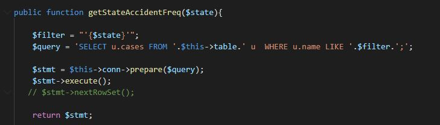
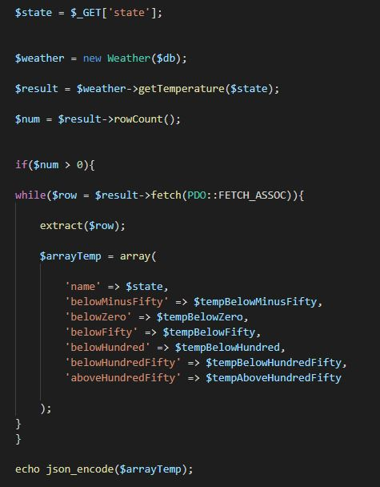
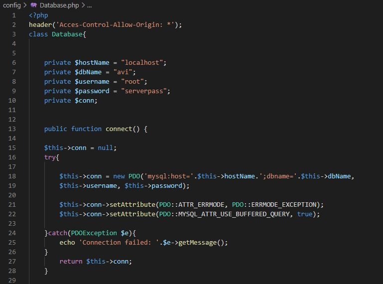
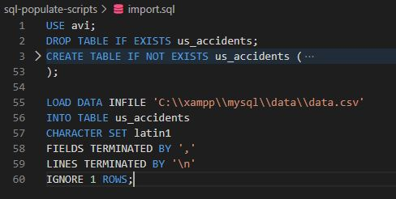
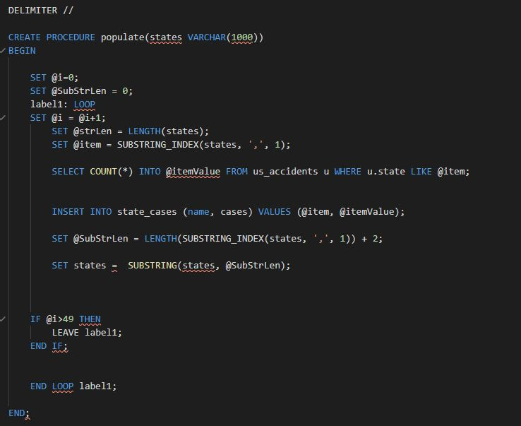
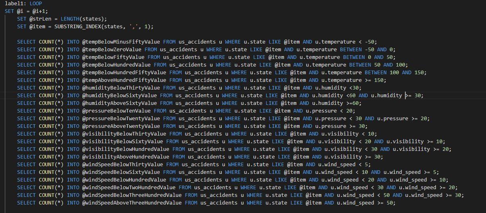
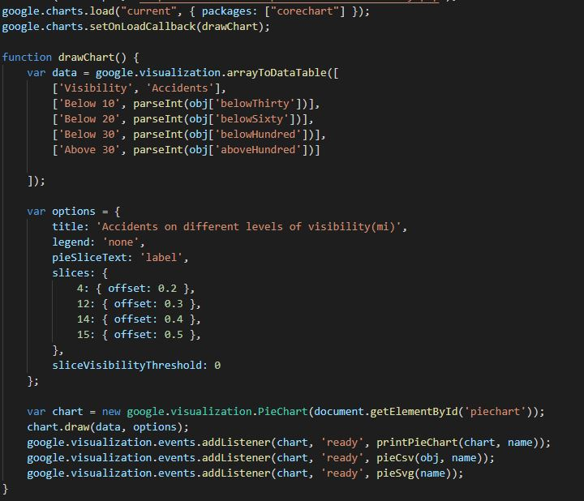
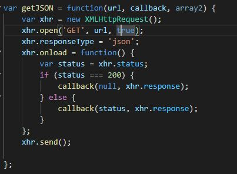
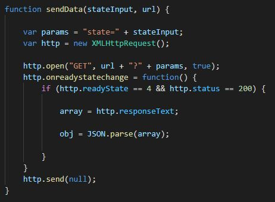

Project: AVi (US Accidents Smart Visualizer)
Contribuitors: Scurtu Claudiu-Constantin
Coordinator: Panu Andrei
Theme: Sa se dezvolte un instrument Web de vizualizare flexibila a datelor vizand accidentele din SUA, pe baza unui API REST/GraphQL propriu. Statisticile si vizualizarile generate – minim 3 maniere + redari cartografice pe baza unor servicii Web de profil – vor putea fi exportate in formatele CSV, PNG si SVG. Sistemul va oferi suport si pentru cautarea multi-criteriala de incidente raportate. Resurse suplimentare despre vizualizarea datelor: https://profs.info.uaic.ro/~busaco/teach/courses/cliw/web-film.html#week4.
Website Description: Website-ul pune la dispozitite utilizatorului o suita de charturi google, populate cu date relatate la Accidentele de masini din Statele Unite ale Americii. Datele colectate fac parte din perioada 2016-2019.
Criteriile
afisate in chart-uri sunt: numarul de accidente din fiecare din cele 50 de state si cauzele/factorii ce cauzeaza aceste accidente.
Interface: Design-ul este unul simplist, fara feature-uri nefolositoare. Website-ul este responsive, prin urmare poate fi vizionat pe orice tip de ecran.
Acest lucru a fost realizat prin media queries in CSS.Butoanele sunt vizibile si intuitive,
la fel ca si navbar-ul care nu este incarcat si este locat in partea de sus a paginii.
Pe ecranele mai inguste butoanele navbar-ului vor fi gasite intr-un dropdown-menu.
MVC
Model: Se ocupa de interogarea bazei de date cu queri-uri relevante cerintelor utilizatorului.
View: Returneaza datele din baza de date in format JSON pentru a putea fi reprezentate grafic.
Controller: Configureaza conexiunea cu baza de date.
Database
Baza de date a fost creata in phpmyadmin, unde s-au importat cu ajutorul scripturilor sql datele, care au fost parsate din .csv-ul initial.
Pe langa tabela mare(importata din .csv), s-au mai creat inca 2 tabele doar cu datele relevante pentru fiecare chart in parte, pentru a nu fi nevoiti sa luam datele din tabela mare si pentru a micsora timpul de asteptare a datelor.
 Used Technologies:
Front-end
- a fost folosit pentru a manipula chart-urile si a prelua anumite input-uri de la user, cat si pentru cateva efecte(cum ar fi sticky navbar on scroll)
- acest tool a fost folosit pentru a reprezenta vizual statisticile si datele asigurate de partea de backend
- s-au folosit request-uri cu ajutorul obiectului XMLHttpRequest pentru a sincroniza partea de front cu partea de back.
- au fost trimise input-urile user-ului catre server.
- au fost aduse datele relevante din partea de backend
 Back-end
- a fost folosit pentru a gestiona baza de date (prin obiectul PDO)
- a fost folosit pentru a aduce date relevante in format json
- s-au folosit scripturi pentru a crea si popula tabelele.
https://developer.mozilla.org/en-US/docs/Web/JavaScript
https://www.php.net/manual/ro/book.pdo.php
https://developer.mozilla.org/en-US/docs/Web/API/XMLHttpRequest
https://youtu.be/OEWXbpUMODk
https://developer.mozilla.org/en-US/docs/Web/API/XMLSerializer
GitHub Repo here.